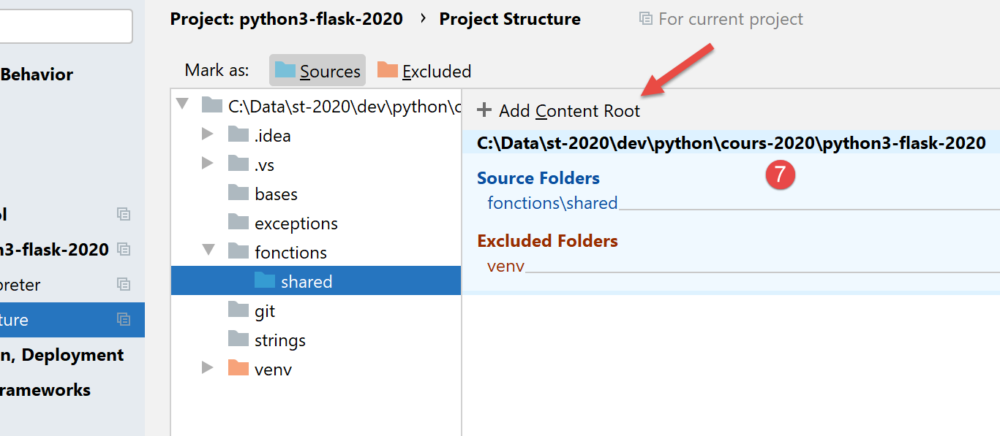

6. As funções

6.1. Script [fonc_01]: âmbito das variáveis
O script [fonc_01] apresenta exemplos do âmbito das variáveis entre funções:
# âmbito das variáveis
def f1():
# deve evitar-se a utilização de variáveis globais
# variável global i
global i
i += 1
# variável local j
j = 10
print(f"f1[i,j]=[{i},{j}]")
def f2():
# deve evitar-se a utilização de variáveis globais
# variável global i
global i
i += 1
# variável local j
j = 20
print(f"f2[i,j]=[{i},{j}]")
def f3():
# variável local i
i = 1
# variável local j
j = 30
print(f"f3[i,j]=[{i},{j}]")
# programa principal
i = 0
j = 0
# estas duas variáveis só serão conhecidas por uma função f
# a menos que esta declare explicitamente, através da instrução «global», que pretende utilizá-las
# ou que a função utilize a variável global apenas em modo de leitura
f1()
f2()
f3()
# j não mudou, mas i mudou
print(f"[i,j]=[{i},{j}]")
Resultados
C:\Data\st-2020\dev\python\cours-2020\python3-flask-2020\venv\Scripts\python.exe C:/Data/st-2020/dev/python/cours-2020/python3-flask-2020/fonctions/fonc_01.py
f1[i,j]=[1,10]
f2[i,j]=[2,20]
f3[i,j]=[1,30]
[i,j]=[2,0]
Process finished with exit code 0
Notas:
- o script mostra a utilização da variável i, declarada como global nas funções f1 e f2. Neste caso, o programa principal e as funções f1 e f2 partilham a mesma variável i.
6.2. Script [fonc_02]: âmbito das variáveis
O script [fonc_03] retoma o script [fonc_02] e mostra como evitar a utilização de variáveis globais:
# âmbito das variáveis
def f1(i):
# variável local i
i += 1
# variável local j
j = 10
print(f"f1[i,j]=[{i},{j}]")
# atribuímos o valor alterado
return i
def f2(i):
# variável local i
i += 1
# variável local j
j = 20
print(f"f2[i,j]=[{i},{j}]")
# retorna o valor alterado
return i
def f3():
# variável local i
i = 1
# variável local j
j = 30
print(f"f3[i,j]=[{i},{j}]")
# programa principal
i = 0
j = 0
# estas duas variáveis só serão conhecidas por uma função f
# a menos que esta declare explicitamente, através da instrução «global», que pretende utilizá-las
# ou se a função utilizar a variável global apenas em modo de leitura
i = f1(i)
i = f2(i)
f3()
# j não mudou, mas i mudou
print(f"[i,j]=[{i},{j}]")
Comentários:
- linhas 2, 12: em vez de ser declarada como global, a variável [i] é passada como parâmetro às funções f1 e f2;
- linhas 9, 19: as funções f1 e f2 devolvem a variável [i] alterada ao programa principal. Este recupera-a nas linhas 36 e 37;
Resultados
C:\Data\st-2020\dev\python\cours-2020\python3-flask-2020\venv\Scripts\python.exe C:/Data/st-2020/dev/python/cours-2020/python3-flask-2020/fonctions/fonc_02.py
f1[i,j]=[1,10]
f2[i,j]=[2,20]
f3[i,j]=[1,30]
[i,j]=[2,0]
Process finished with exit code 0
6.3. Script [fonc_03]: âmbito das variáveis
O script [fonc_03] ilustra uma particularidade das variáveis utilizadas tanto numa função como no código que a chama, dependendo se, na função, essa variável é utilizada apenas em modo de leitura ou não.
def f1():
# aqui, a variável global i é conhecida
print(f"[f1] i={i}")
# aqui, a variável global j é conhecida
print(f"[f1] j={j}")
def f2():
# aqui, a variável global i não é conhecida
# porque a função f2 define uma variável local com o mesmo nome
# é então esta que tem prioridade
try:
# tentativa de exibir a variável local i definida mais adiante
print(f"[f2] i={i}")
# a instrução seguinte torna i uma variável local da função f2
i = 7
except BaseException as erreur:
print(f"[f2] erreur={erreur}")
def f3():
# aqui, a variável global i não é reconhecida
# uma vez que a função f3 define uma variável local com o mesmo nome
# é, portanto, esta que tem prioridade
# a instrução seguinte define i como uma variável local
i = 7
# exibição — aqui, i é conhecida
print(f"[f3] i={i}")
# main -----------
# variáveis globais das funções
i = 10
j = 20
# chamada à função f1
f1()
print(f"[main] i={i}, j={j}")
# chamada à f2
f2()
print(f"[main] i={i}")
# chamada à função f3
f3()
print(f"[main] i={i}")
Notas
- linha 34: o código principal define uma variável [i];
- linhas 1-5: a função f1 também utiliza uma variável [i] sem lhe atribuir um valor. Trata-se de uma leitura da variável [i]. Neste caso, a variável [i] utilizada é a do código chamador, linha 34;
- linhas 8-18: a função f2 também utiliza uma variável [i], mas atribui-lhe um valor na linha 16. O facto de atribuir um valor à variável [i] em f2 torna automaticamente a variável [i] numa variável local da função [f2]. Esta, por sua vez, «oculta» a variável [i] do código chamador;
- linha 14: a operação de gravação da variável local [i] irá falhar, uma vez que esta não tem valor quando se chega à linha 14. Ela obtém o seu valor na linha 16. Irá ocorrer uma exceção. Por este motivo, inserimos a linha 14 num try/catch;
- linhas 21-29: a função f3 faz o mesmo que a função f2, mas define mais cedo a sua variável local [i];
Resultados
C:\Data\st-2020\dev\python\cours-2020\python3-flask-2020\venv\Scripts\python.exe C:/Data/st-2020/dev/python/cours-2020/python3-flask-2020/fonctions/fonc_03.py
[f1] i=10
[f1] j=20
[main] i=10, j=20
[f2] erreur=local variable 'i' referenced before assignment
[main] i=10
[f3] i=7
[main] i=10
Process finished with exit code 0
6.4. Script [fonc_04]: modo de passagem de parâmetros
O script é o seguinte:
# função f1
def f1(a):
a = 2
# função f2
def f2(a, b):
a = 2
b = 3
return a, b
# ------------------------ main
x = 1
f1(x)
print(f"x={x}")
(x, y) = (-1, -1)
(x, y) = f2(x, y)
print(f"x={x}, y={y}")
Resultados
Notas:
- tudo é um objeto em Python. Alguns objetos são ditos «imutáveis» (em inglês): não é possível alterá-los. É o caso dos números, das cadeias de caracteres e das tuplas. Quando os objetos Python são passados como parâmetros para funções, são as suas referências que são passadas, a menos que esses objetos sejam «imutáveis»; nesse caso, é o valor do objeto que é passado;
- as funções f1 (linha 2) e f2 (linha 7) pretendem ilustrar a passagem de um parâmetro de saída. Pretende-se que o parâmetro efetivo de uma função seja alterado pela função;
- linhas 2-3: a função f1 altera o seu parâmetro formal a. Pretende-se saber se o parâmetro efetivo também será alterado;
- linhas 14-15: o parâmetro efetivo é x=1. A linha 2 dos resultados mostra que o parâmetro efetivo não é alterado. Assim, o parâmetro efetivo x e o parâmetro formal a são dois objetos diferentes;
- linhas 8-10: a função f2 altera os seus parâmetros formais a e b e devolve-os como resultados;
- linhas 17-18: passam-se para a função f2 os parâmetros efetivos (x, y) e o resultado da função f2 é atribuído a (x, y). A linha 3 dos resultados mostra que os parâmetros efetivos (x, y) foram alterados.
Conclui-se que, quando objetos «imutáveis» são parâmetros de saída, estes têm de fazer parte dos resultados devolvidos pela função.
6.5. Script [fonc_05]: ordem de escrita das funções num script
O script [fonc_05] mostra que não é possível chamar uma função se esta não tiver sido encontrada anteriormente no código:
# ------------------------ main
print(f2(100, 200))
# função f1
def f1(a):
return a + 10
# função f2
def f2(a, b):
return f1(a + b)
Notas
- a linha 2 irá provocar um erro porque utiliza a função f2, que ainda não foi definida no script;
Resultados
6.6. Script [fonc_06]: ordem de escrita das funções num script
O script [fonc_06] mostra que o que se aplica ao código chamador não se aplica às funções:
# função f2
def f2(a, b):
return f1(a + b)
# função f1
def f1(a):
return a + 10
# ------------------------ main
print(f2(100, 200))
Notas
- linha 3: a função [f2] utiliza a função [f1] definida mais adiante no script. No entanto, isso não provoca qualquer erro. Pode-se, portanto, concluir que a ordem de definição das funções num script Python não tem importância;
Resultados
6.7. Script [fonc_07]: utilização de módulos
O script [fonc_07] mostra como isolar as funções num módulo.

Isolamos as funções reutilizáveis num módulo. Em vez de as transportar de um script para outro:
- colocamo-las num ficheiro separado que declaramos de uma forma específica;
- os scripts que necessitam dessas funções «importam» o módulo que as contém;
O script [fonctions_module_01] é o seguinte:
# função f2
def f2(a, b):
return f1(a + b)
# função f1
def f1(a):
return a + 10
Para que as funções do script [fonctions_module_01] possam ser referenciadas por outros scripts, existem várias formas de o fazer. Estas diferem consoante o script seja ou não executado no interior do [PyCharm].
No [PyCharm], os módulos importados são procurados em pastas específicas denominadas [Sources Root]. Existem duas formas de transformar uma pasta num [Sources Root]:

- no [4], a pasta mudou de cor;
Após esta operação, a pasta [fonctions/modules] é reconhecida como uma pasta de origem. Pode-se então escrever num script:
Para importar/utilizar a função f2 definida no módulo [fonctions_module_01.py].
 |
Outro método consiste em utilizar as propriedades do projeto:
- acima, a sequência [1-6] permite transformar a pasta [shared] numa pasta onde guardar os módulos a importar;
Por enquanto, não vamos declarar nenhuma pasta como [Sources Root], além da raiz do projeto:

Feito isto, podemos escrever o seguinte script [fonc-07]:
# utilização de módulos
import sys
# ------------------------ main
print(f"Python path={sys.path}")
from fonctions.shared.fonctions_module_01 import f2
print(f2(100, 200))
- linha 2: importa-se o objeto [sys] para poder utilizar, na linha 5, o seu atributo [path], que fornece o que se denomina [Python Path]: uma lista de pastas que serão exploradas na procura de módulos importados;
- linha 6: importa-se a função f2 do módulo [fonctions_module_01]. Para designar este módulo, utiliza-se o caminho que vai da raiz do projeto até ao módulo. Com o PyCharm, a raiz do projeto faz sempre parte das pastas exploradas quando se procura um módulo importado num script. Esta pasta faz, portanto, parte do [Python Path] do projeto. É isso que a linha 5 nos permitirá verificar;
- linha 6: se descrevêssemos o caminho que vai da raiz do projeto até à pasta [fonctions_module_01], escreveríamos [fonctions/shared/fonctions_module_01]. No caminho de um módulo, o sinal / é substituído pelo ponto. Escrevemos, portanto, [fonctions.modules.fonctions_module_01];
- após a linha 6, a função f2 é conhecida. Utiliza-se na linha 8;
Resultados
C:\Data\st-2020\dev\python\cours-2020\python3-flask-2020\venv\Scripts\python.exe C:/Data/st-2020/dev/python/cours-2020/python3-flask-2020/fonctions/fonc_07.py
Python path=['C:\\Data\\st-2020\\dev\\python\\cours-2020\\python3-flask-2020\\fonctions', 'C:\\Data\\st-2020\\dev\\python\\cours-2020\\python3-flask-2020', 'C:\\Data\\st-2020\\dev\\python\\cours-2020\\python3-flask-2020\\fonctions\\shared', 'C:\\myprograms\\Python38\\python38.zip', 'C:\\myprograms\\Python38\\DLLs', 'C:\\myprograms\\Python38\\lib', 'C:\\myprograms\\Python38', 'C:\\Data\\st-2020\\dev\\python\\cours-2020\\python3-flask-2020\\venv', 'C:\\Data\\st-2020\\dev\\python\\cours-2020\\python3-flask-2020\\venv\\lib\\site-packages']
310
Process finished with exit code 0
Acima:
- destacado a verde, vê-se que a raiz do projeto faz parte do [Python Path];
- destacado a amarelo, vê-se que a pasta do script executado também faz parte do [Python Path];
- os restantes elementos do [Python Path] provêm diretamente da pasta de instalação do Python;
O que acontece quando não se utiliza o PyCharm para executar o [fonc-07]?


- no [1], executa-se o script [fonc-07]. Estamos posicionados na pasta [fonctions];
- no [2], verifica-se que a pasta de execução faz parte do [Python Path]. É sempre assim. É possível verificar também que a pasta raiz [C:\\Data\\st-2020\\dev\\python\\cours-2020\\python3-flask-2020] não faz parte do [Python Path];
- em [3], o interpretador Python indica que não encontra o módulo [fonctions];
Para procurar o módulo importado [fonctions.shared.fonctions_module_01], o interpretador Python procura nas pastas do [Python Path] uma subpasta chamada [fonctions]. Não o encontra em lado nenhum. Com efeito, a subpasta [fonctions] encontra-se na pasta [C:\Data\st-2020\dev\python\cours-2020\python3-flask-2020], que não faz parte do [Python Path].
O script [fonc-08] apresenta uma possível solução para este problema.
6.8. Script [fonc_08]: adicionar pastas ao [Python Path]
É possível modificar o [Python Path] por programação, tal como mostra o script [fonc-08]:
# utilização de módulos
import os
import sys
# pasta do script
script_dir = os.path.dirname(os.path.abspath(__file__))
# Python Path antes da alteração
print(f"Python path avant={sys.path}")
# adiciona-se a pasta [shared] ao Python Path
sys.path.append(f"{script_dir}/shared")
# Python Path após a alteração
print(f"Python path après={sys.path}")
# import f2
from fonctions_module_01 import f2
# ------------------------ main
print(f2(100, 200))
Notas
- linha 4: a variável especial [__file__] é o nome do script que está a ser executado. Dependendo do contexto de execução, este nome pode ser absoluto (Pycharm) ou relativo (consola). A função [os.path.abspath] devolve o nome absoluto do ficheiro cujo nome lhe é passado. A função [os.path.dirname] devolve o nome absoluto da pasta que contém o ficheiro cujo nome lhe é passado;
- linha 10: [sys.path] é uma matriz que contém os nomes das pastas a explorar quando se procura um módulo. Adiciona-se a esta matriz a raiz do projeto definida na linha 4;
- exibe-se o [Python Path] antes (linha 8) e depois (linha 12) da modificação;
- linha 15: importa-se o módulo [fonctions_module_01], que contém a função f2;
A execução no PyCharm produz os seguintes resultados:
C:\Data\st-2020\dev\python\cours-2020\python3-flask-2020\venv\Scripts\python.exe C:/Data/st-2020/dev/python/cours-2020/python3-flask-2020/fonctions/fonc_08.py
Python path avant=['C:\\Data\\st-2020\\dev\\python\\cours-2020\\python3-flask-2020\\fonctions', 'C:\\Data\\st-2020\\dev\\python\\cours-2020\\python3-flask-2020', 'C:\\Data\\st-2020\\dev\\python\\cours-2020\\python3-flask-2020\\fonctions\\shared', 'C:\\myprograms\\Python38\\python38.zip', 'C:\\myprograms\\Python38\\DLLs', 'C:\\myprograms\\Python38\\lib', 'C:\\myprograms\\Python38', 'C:\\Data\\st-2020\\dev\\python\\cours-2020\\python3-flask-2020\\venv', 'C:\\Data\\st-2020\\dev\\python\\cours-2020\\python3-flask-2020\\venv\\lib\\site-packages']
Python path après=['C:\\Data\\st-2020\\dev\\python\\cours-2020\\python3-flask-2020\\fonctions', 'C:\\Data\\st-2020\\dev\\python\\cours-2020\\python3-flask-2020', 'C:\\Data\\st-2020\\dev\\python\\cours-2020\\python3-flask-2020\\fonctions\\shared', 'C:\\myprograms\\Python38\\python38.zip', 'C:\\myprograms\\Python38\\DLLs', 'C:\\myprograms\\Python38\\lib', 'C:\\myprograms\\Python38', 'C:\\Data\\st-2020\\dev\\python\\cours-2020\\python3-flask-2020\\venv', 'C:\\Data\\st-2020\\dev\\python\\cours-2020\\python3-flask-2020\\venv\\lib\\site-packages', 'C:\\Data\\st-2020\\dev\\python\\cours-2020\\python3-flask-2020\\fonctions/shared']
310
Process finished with exit code 0
- linha 3: verifica-se que a pasta [shared] aparece duas vezes na pasta [Python Path]. É possível evitar isso, mas, neste caso, não causa qualquer problema;
- linha 4: a função f2 foi executada corretamente;
Agora, vamos executar o [fonc-08] num terminal:
(venv) C:\Data\st-2020\dev\python\cours-2020\python3-flask-2020\fonctions>python fonc_08.py
Python path avant=['C:\\Data\\st-2020\\dev\\python\\cours-2020\\python3-flask-2020\\fonctions', 'C:\\myprograms\\Python38\\python38.zip', 'C:\\myprograms\\Python38\\DLLs', 'C:\\myprograms\\Python38\\lib', 'C:\\myprograms\\Python38', 'C:\\Data\\st-2020\\dev\\python\\cours-2020\\python3-flask-2020\\venv', 'C:\\Data\\st-2020\\dev\\python\\cours-2020\\python3-flask-2020\\venv\\lib\\site-packages']
Python path après=['C:\\Data\\st-2020\\dev\\python\\cours-2020\\python3-flask-2020\\fonctions', 'C:\\myprograms\\Python38\\python38.zip', 'C:\\myprograms\\Python38\\DLLs', 'C:\\myprograms\\Python38\\lib', 'C:\\myprograms\\Python38', 'C:\\Data\\st-2020\\dev\\python\\cours-2020\\python3-flask-2020\\venv', 'C:\\Data\\st-2020\\dev\\python\\cours-2020\\python3-flask-2020\\venv\\lib\\site-packages', 'C:\\Data\\st-2020\\dev\\python\\cours-2020\\python3-flask-2020\\fonctions/shared']
310
- linha 2: tal como anteriormente, a pasta [shared] não se encontra no [Python Path];
- linha 3: agora já lá está;
- linha 4: a função f2 foi encontrada;
6.9. Script [fonc_09]: declaração do tipo dos parâmetros
O script [fonc_09] mostra que é possível declarar o tipo dos parâmetros de uma função, bem como o do resultado. No entanto, esta declaração serve apenas para a documentação da função. O interpretador Python não verifica se os parâmetros efetivos da função têm, de facto, o tipo esperado. No entanto, o PyCharm assinala as inconsistências de tipos entre os parâmetros efetivos e os formais. Esta razão, por si só, é suficiente para tornar as declarações de tipo indispensáveis.
O script é o seguinte:
# uma função com indicação do tipo dos parâmetros
# isto serve apenas como documentação, uma vez que o interpretador Python não tem isso em conta
def show(param: int) -> int:
print(f"param={param}, type(param)={type(param)}")
return param + 1
# main -------------------------
print(show(4))
show("xyz")
Notas:
- linha 5: declara-se que o parâmetro formal [param] é do tipo [int] e que o resultado da função é também do tipo [int];
- linha 11: o parâmetro efetivo da função [show] tem o tipo correto;
- linha 12: o parâmetro efetivo da função [show] não tem o tipo correto;
Resultados
- linha 10: o tipo do parâmetro [param] é do tipo [str]. Quando esta mensagem é apresentada, já se está no código da função [show]. O interpretador Python aceitou, portanto, que o parâmetro efetivo da função [show] fosse do tipo [str];
- a linha 7 do código provoca a exceção refletida nas linhas 4 a 10 dos resultados;
PyCharm indica, no entanto, que existe uma anomalia:

Em [1], PyCharm destacou a chamada incorreta.
6.10. Script [fonc_10]: parâmetros nomeados
Para passar parâmetros a uma função, é possível utilizar os nomes dos parâmetros formais da mesma. Neste caso, não é obrigatório respeitar a ordem dos parâmetros formais:
# é possível referir-se aos parâmetros efetivos pelos seus nomes formais
def f(x, y):
return x + y
# main
print(f(y=10, x=3))
Notas
- linha 2: a função f tem dois parâmetros formais, x e y;
- linha 7: ao chamar a função f, é possível utilizar os nomes dos parâmetros formais. Esta prática pode ser útil, pelo menos, em dois casos:
- a função tem muitos parâmetros, a maioria dos quais com um valor por defeito. Ao chamá-la, a técnica anterior permite inicializar apenas os parâmetros cujo valor por defeito não se pretende utilizar;
- se os parâmetros formais tiverem um nome significativo, então a utilização de parâmetros nomeados na chamada da função melhora a legibilidade do código;
Resultados
6.11. Script [fonc_11]: função recursiva
O script [fonc_11] é um exemplo de função recursiva (que se chama a si própria):
# função recursiva
def fact(i: int) -> int:
# fatorial(1) é 1
# uma função recursiva tem de terminar em determinado momento
if i == 1:
return 1
else:
# fatorial(i) = i * fatorial(i-1)
return i * fact(i - 1)
# ---------- main
print(f"fact(8)={fact(8)}")
Comentários
- linhas 1-9: a função fatorial;
- linha 9: a função [factorielle] chama-se a si própria;
- linhas 5-6: uma função recursiva deve parar sempre que uma condição for satisfeita; caso contrário, ocorre uma recursão infinita;
Resultados
6.12. Script [fonc_12]: função recursiva
A função [fonc_12] fornece mais detalhes sobre o funcionamento da recursividade:
# função recursiva
# comportamento do parâmetro j
def fact(i: int, j: int) -> int:
# fim da função recursiva
if i == 1:
print(f"j={j}")
return 1
else:
# manipula-se j
j += 1
print(f"avant fact j={j}")
# recursividade
f = fact(i - 1, j)
print(f"après fact j={j}")
# resultado
return i * f
# ---------- main
print(f"fact(8)={fact(8, 0)}")
Comentários
- linha 5: continuamos a centrar-nos na função fatorial. Adiciona-se-lhe o parâmetro [j];
- linha 12: a variável j é incrementada regularmente a cada fatorial. Exibimos o seu valor antes (linha 12) e depois (linha 16) da recursão (linha 15);
Resultados
- linhas 2-8: verifica-se que o valor de [j] aumenta enquanto a recursão continua, até se verificar a condição em que a recursão termina. A partir desse momento, o retorno das chamadas à função [fact] ocorre na ordem inversa às chamadas;
- linhas 10-16: estas exibições refletem os retornos sucessivos da chamada à função fatorial. A variável [j] volta aos seus valores até atingir o seu valor inicial 1;